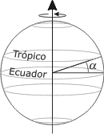
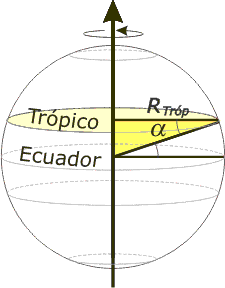

|
NO ME SALEN
EJERCICIOS RESUELTOS DE FÍSICA
(Movimiento circular uniforme)
|
|

|
| |
FIS c6.15 - a) Calcular el módulo de la velocidad de un
punto situado sobre el ecuador en la Tierra.
b) Calcular el módulo de la
velocidad de un punto ubicado
en los trópicos, sabiendo que
el ángulo que forman con el
ecuador terrestre es α = 23º 27’
(latitud).
c) ¿Cuál es la velocidad de
un punto ubicado en los
polos?
RTierra = 6378 km |
 |
No se entiende por qué nos llaman punto. Bueno, esto es muy sencillo. Vamos con el ítem a). La velocidad angular de la Tierra es conocida por todos: una vuelta (2π) por día.
ω = 2π / día = 2π / 24 h
Y la velocidad tangencial estando en el ecuador:
v = RTierra . ω
v = 6.378 km . 2π / 24 h
|
|
|
|
¡Eso es más rápido que el sonido!
El ítem b) suele traer dificultades. El problema radica en que no se distingue bien cuál es el radio de giro... y se lo confunde con el radio terrestre. Mirá el esquema: |
|
|
El radio de giro se parte del eje de la Tierra pero más al norte de su centro, a la altura del Trópico.
Si observás con cariño el triangulito sombreado de amarillo verás que es rectángulo, que el ángulo indicado es nuevamente la latitud, α, (son alternos internos entre paralelas), que su hipotenusa es el radio terrestre y el radio de giro es el cateto adyacente a α. Por lo tanto:
RTróp = RTierra . cos α
RTróp = 6.378 km . cos 23º 27’
RTróp = 5.849 km
|
 |
|
|
Ahora sí, vamos al MCU de un habitante sobre el Trópico:
vTróp = RTróp . ω
vTróp = 5.849 km. 2π / 24 h
|
|
 |
|
|
Apenas un poco más lento que un habitante sobre el Ecuador. Pero ya queda claro cuál es la velocidad de traslación (debido a la rotación de la Tierra en torno a su eje) de un habitante sonre el Polo, o sea, lo que se pregunta en el ítem c). |
|
DESAFIO: Si entre los Trópicos la gente se desplaza más rápido que el sonido...¿Cómo puede ser que se escuchen entre ellos cuando hablan? |
|
| Algunos derechos reservados (en criollo: no podés publicarlo a tu nombre, ¿entendiste? Mirá que tengo un boga repesado, ¿eh?).
Eso sí, se permite su reproducción citando la fuente, o sea, papá. Última actualización sep-19. Buenos Aires, Argentina. |
|
|
| |
|